Матеріали Дентсплай Сірона · журнал «ДентАрт» 2016 №4
Техніка штампа — просте рішення для реставрації бічних зубів
STAMP TECHNIQUE AS AN EASY SOLUTION FOR THE RESTORATION OF POSTERIOR TEETH
Найчастіше карієс розвивається у фісурах бічних зубів. Карієс емалі у цьому випадку поширюється в глибину по ходу емалевих призм до емалево-дентинної межі у формі конуса з вершиною у точці виникнення. При цьому дефект тривалий час може залишатися непомітним і клінічно себе не проявляє.
Надалі карієс уражає дентин, поширюючись по периферії, переважно по ходу дентинних канальців та емалево-дентинній межі. Унаслідок більшого вмісту в дентині органічних речовин порівняно з емаллю каріозний процес поширюється в ньому активніше. У зв'язку з цим виникають підриті краї емалі, які не мають під собою опори в дентині. Утворюються конусоподібні вогнища, що сходяться основами в ділянці емалево-дентинного з'єднання.
При розвитку каріозного ураження в глибині фісури мінімальні поверхневі зміни часто супроводжуються досить великими ураженнями тканин, що лежать глибше. У результаті діагностика фісурного карієсу та карієсу контактних поверхонь стає складнішою. Такий розвиток каріозного процесу називають прихованим карієсом — станом, за якого зуб клінічно здається інтактним, але в його тканинах відбувається розвиток каріозного ураження (прихована каріозна порожнина), що виявляється за допомогою додаткових діагностичних засобів або проявляється при збільшенні розмірів осередку ураження, яке призводить до відлому стоншеної емалі, що покриває його, або розвитку запалення пульпи.
Препарування зуба при таких дефектах завжди буде більш інвазивним, ніж нам би того хотілося. Класичне пошарове внесення композиту по горбиках не дає можливості відновити ідеальну анатомію жувальної поверхні в її первісному вигляді і повністю залежить від мануальних навичок оператора. У деяких рідкісних випадках, коли оклюзійна поверхня майже повністю збереглася, можна скористатися чудовою альтернативою традиційній техніці реставрації — технікою штампа. З її допомогою можна легко і швидко створити точно таку анатомію, яку зуб мав до втручання, вона прискорює відновлення і спрощує фінішну обробку поверхні при введенні зуба в оклюзію.
Клінічний приклад
Перед втручанням зуб очищають профілактичною пастою з індексом РДА не менше 200 од. Визначати колір слід до дегідратації зуба, яка може вплинути на коректне визначення кольору. Для визначення кольору ми скористалися спектрофотометром, портативним пристроєм, який використовується для ідентифікації найкращого колірного варіанту, доступного в формульній базі даних, що спрощує і прискорює процедуру. Також можна скористатися стандартною шкалою Віта.
При таких відновленнях підійде матеріал з гарними мануальними властивостями Сегам.X One Universal/Dentsply DeTrey. У нього 7 відтінків, які відображають усю палітру відтінків шкали Віта. Завдяки усередненій прозорості між емаллю і дентином Сегам.X One Universal має яскраво виражений ефект хамелеона. Спрощена система вибору відтінків Сегам.X One Universal скорочує час для виконання естетичних реставрацій і усуває необхідність мати широкий асортимент відтінків. У цьому випадку відтінок досить світлий — А1 за шкалою Віта, відповідно, відтінок Сегам.X One Universal теж А1.

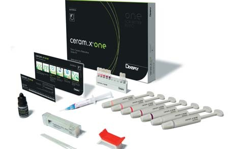
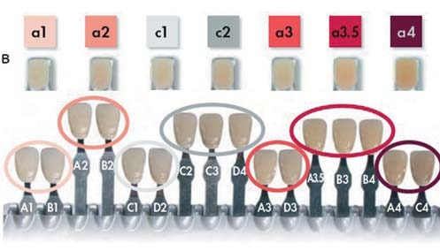
Перед препаруванням коригувальною відтискною масою (у цьому випадку А-силіконом) було знято відтиск-штамп з оклюзійної поверхні зуба. Для цієї мети можна використовувати текучий композит або рідкий світлоотверджувальний рабердам. Ці матеріали здатні досить точно відтворити оклюзійну анатомію, однак занадто крихкі і не дають можливості відтискувати композитний матеріал з невеликим тиском. Також можна використовувати прозору силіконову масу, проте застосування її в таких рідкісних випадках, на нашу думку, — марнотратство. Для зручного використання в матеріал можна занурити аплікатор. Штамп можна обрізати скальпелем, видаляючи надлишки коригуючої маси, щоб він ідеально адаптувався до поверхні зуба. У штампі чудово зберігаються всі тонкі деталі фісурного малюнка.
У цьому випадку не важко віддиференціювати карієс і пігментовану фісуру, проте у спірних ситуаціях можна попередньо прозондувати фісуру К-римером під ультразвуковим впливом, за наявності дефекту інструмент заклинює у фісурі на глибину порожнини. Препарування виконане кулястими борами на тонкій ніжці і абразивністю 120 мк (зелене маркування), які дають ліпший огляд; згладжування країв — великим оливоподібним бором абразивністю 30 мк (жовте маркування).
Виконано тотальне протравлювання тканин. Рекомендована експозиція протравлювального гелю: на емалі — 15-30 с, на дентині — не більше 15 с. Зручно, щоб гель для протравлювання був не надто текучим, це не дозволяє йому розтікатися по поверхні і дає можливість втирати кислоту саме в емаль, що забезпечує якісне протравлювання не тільки внутрішніх ділянок, що складаються з емалевих призм, як при статичному протравлюванні, але й зовнішніх апризматичних ділянок емалі. Таке динамічне протравлювання запобігає появі острівців непротравленої емалі, з якими адгезив з'єднується гірше, що може призвести до утворення мікропросторів, появи «білої» лінії, крайового забарвлювання реставрації. Методика динамічного протравлювання передбачає постійне втирання протравлювального гелю в поверхню емалі жорсткою щіткою-аплікатором.
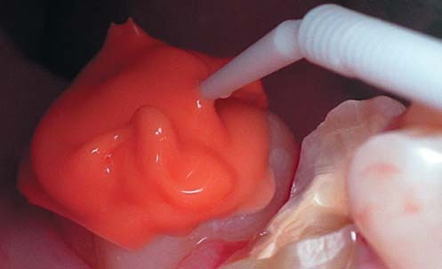
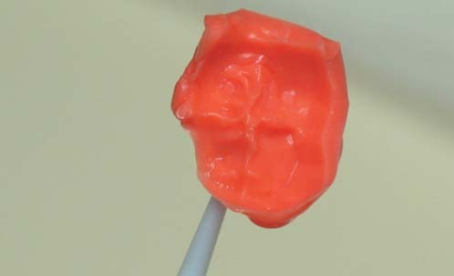
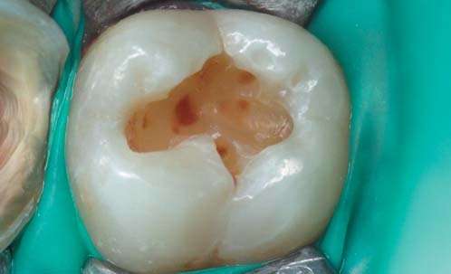
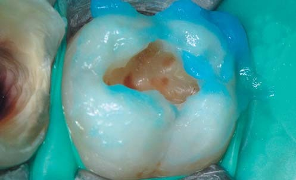
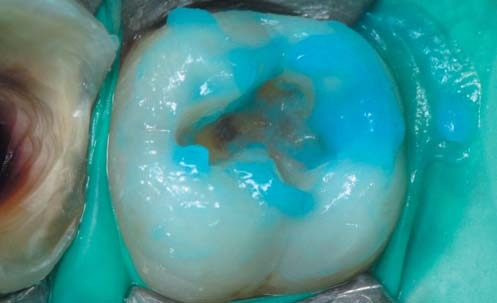
Після протравлювання порожнину промивають протягом 30 с водою і злегка підсушують повітрям. Емаль при цьому повинна стати матово-білою, а дентин залишитися злегка вологим, «іскристим». Після правильно виконаної техніки тотального протравлювання поверхня емалі стає мікрошорсткою, змащений шар на поверхні дентину розчиняється і повністю видаляється, поверхневі шари дентину демінералізуються, оголюються колагенові волокна, розкриваються дентинні канальці.
Як правило, відсутність оптимального рівня вологості поверхні дентину є причиною виникнення післяопераційної чутливості і зниження сили адгезії. Ми надаємо перевагу спиртовмісній адгезивній системі Prime&Bond One Etch & Rinse/Dentsply DeTrey, яка демонструє чудові довготермінові результати за різного ступеня вологості дентину. Висушувати адгезив слід не надто сильним струменем повітря, оскільки це може призвести до блискавичного випаровування розчинника, перепаду осмотичного тиску в дентинних канальцях і травми одонтобластів. Правильне висушування адгезиву триває приблизно 30 с, у результаті стінки порожнини мають бути покриті тонкою блискучою плівкою. Ця плівка не повинна рухатися під дією струменя повітря.
Слід пам'ятати, що після полімеризації адгезиву рух рідини в дентинних канальцях не припиняється. Дентинна рідина продовжує чинити постійний тиск на сформований гібридний шар. Існує кілька способів стабілізації гібридного шару: послідовна, а не паралельна адгезивна підготовка кількох відпрепарованих зубів; нанесення на всі стінки порожнини тонкого шару текучого композиту відразу після полімеризації адгезиву і т. д. Враховуючи високий С-фактор порожнини класу I, як текучий композит, що стабілізує адгезивний шар, чудово підійде текучий наповнений композит SDR/Dentsply DeTrey, який має знижений полімеризаційний стрес, може вноситися в порожнину порцією до 4 мм, нівелює піднутрення за рахунок самовирівнювання і низького пороутворення. В одношаровій техніці матеріал вноситься однією порцією. Сегам.X One Universal має тривалий робочий час (120 с), що дозволяє виконати реставрацію якісно і в спокійному режимі.
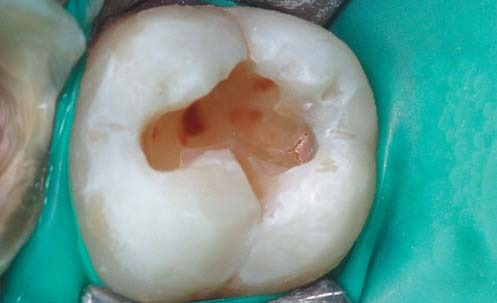
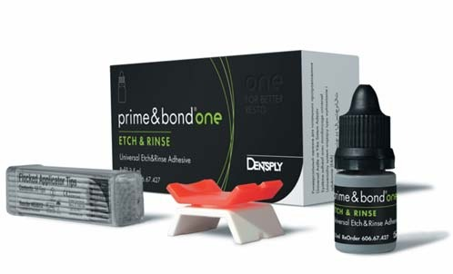
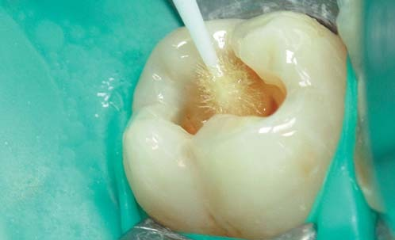
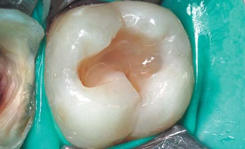
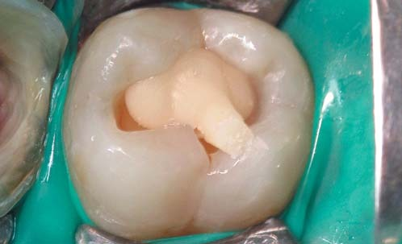
Після внесення композиту в порожнину слід провести притирання композиту і видалення надлишків інструментом обтічної форми. Усі переходи на емаль повинні бути максимально згладжені. Складність полягає у внесенні матеріалу quantum satis, оскільки при надмірному внесенні композиту штамп не зможе правильно позиціонуватися на поверхні зуба.
Далі заготовлений штамп адаптується до зуба. Установка штампа повинна бути точною з деяким відтискуванням, що дозволяє, не зрушуючи композит, отримати правильний відбиток жувальної поверхні. Відсвічування порції композиту провадиться через товщу емалі по черзі з язичної і щічної поверхні протягом 5 с, що дозволяє недополімеризувати композит повністю і в подальшому дає можливість адаптувати його по периметру порожнини.
Після видалення штампа інструментом обтічної форми проводимо остаточне притирання матеріалу до емалі для запобігання появі переходу або «білої лінії». У фісуру тонким інструментом вноситься світло-коричневий барвник. Плинність та інтенсивність фарби можна коригувати смолою, яка дозволяє в'язкій фарбі затікати у профіль фісури. Після легкого роздування фарба зі смолою полімеризуються протягом 3 с, далі вноситься крапля гліцерину.
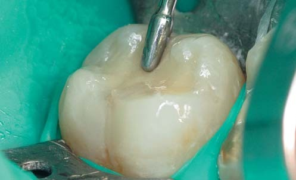
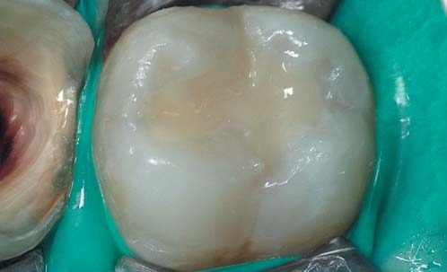
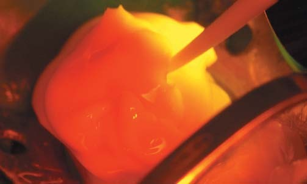
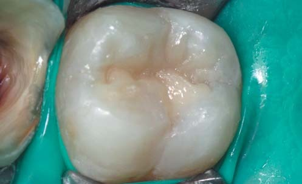
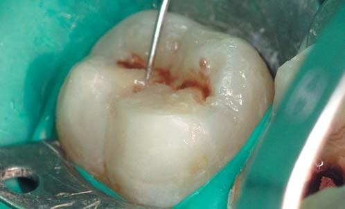
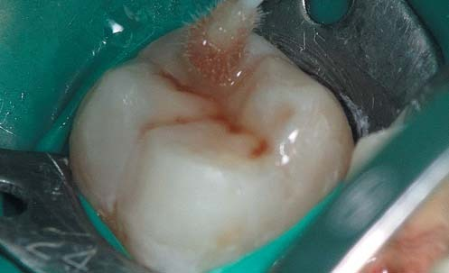
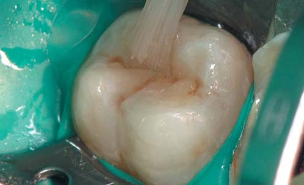
Гліцерин і смола запобігають появі шару, інгібованого киснем, що дозволить фісурі блищати навіть без можливості відполірувати глибокі піднутрення. Таке забарвлювання фісури робиться не тільки для більшої індивідуалізації реставрації, але й для запечатування пор, піднутрень, шорсткостей, які неможливо відполірувати. Якщо розпочати фінішну обробку відразу після моделювання без такого запечатування, профіль фісури буде засипаний ошурками композиту.
Остаточна полімеризація виконується через шар гліцерину протягом 20 секунд. Слід пам'ятати, що переполімеризувати композит неможливо, а недополімеризований композит набагато складніше якісно відшліфувати і відполірувати. Це відновлення має практично таку саму оклюзійну анатомію, як і перед препаруванням, з невеликим глянцем, який збережеться навіть після фінішної обробки композиту.
Перевірка оклюзійних контактів провадиться за двоетапним протоколом артикуляційним папером Бауша 200 мкм і оклюзійною фольгою 8 мкм. Шліфування та полірування виконувалися системою Enhance Multi, рекомендована швидкість обертання між 5000 та 10000 оборотів за хвилину, легкими переривчастими рухами, обов'язково з водяним охолодженням. Остаточне полірування виконане полірувальними пензликами Occlubrash.
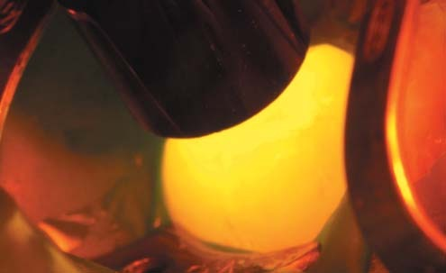
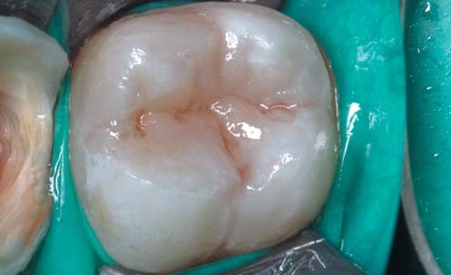
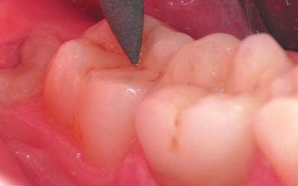
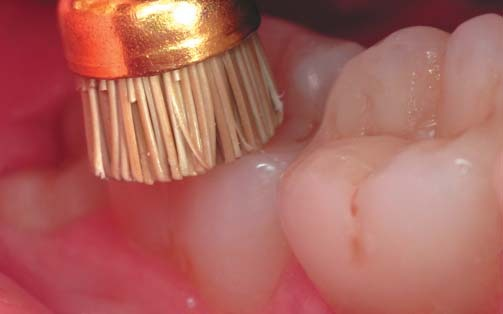
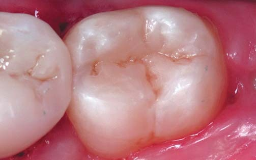
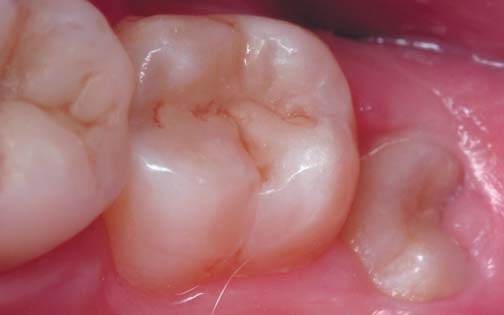
Фото після відновлення. Фото на контрольному огляді через рік.
Висновки
Техніка оклюзійного штампа при відновленні бічних зубів дає можливість швидшого формування натуральної архітектоніки жувальної анатомії, ніж традиційне відтворення оклюзійної анатомії вручну. Використання універсального відтінку композиту, текучого композиту зі зниженим полімеризаційним стресом, менша кількість шарів композиту прискорюють етап реставрації, а характеризація фісури за допомогою фарби і гліцерину додає натуральності нашому відновленню.
На цьому клінічному прикладі продемонстрована техніка для відновлення бічних зубів з незруйнованою жувальною поверхнею, однак при деякому доопрацюванні техніку можна використовувати і для відновлення трохи стертих зубів при тотальному відновленні оклюзії після попереднього воскового моделювання на моделі.
Література
- Scolavino S., Paolone G., Orsini G., Devoto W., Putignano A. The simultaneous modeling technique. Int J Esthet Dent 2016;11:2-25.
- Perrin P, Zimmerli B, Jacky D, Lussi A, Helbling C, Ramseyer S. Die Stempeltechnik fur direkte Kompositversorgungen. Schweiz Monatsschr Zahnmed 2013;123:111-129.
- Simon T. Ramseyer, Christoph Helbling, Adrian Lussi. Vertical Bite Reconstructions of Erosively Worn Dentitions and the «Stamp Technique» — A Case Series with a Mean Observation Time of 40 Months. The journal of adhesive dentistry. 06/2015; 17(3).
- Kilian Molina. Stamp Technique. www.styleitaliano.org
- Терапевтическая стоматология детского возраста. Под редакцией Л.А. Хоменко. ООО «Книга плюс», 2007. – 815 с.
- Welbury R.R. Paediatric Dentistry. Third Edition. Edited by / R.R. Welbury, M.S. Duggal, M.T. Hosey. Oxford University press 2005. – 443 p.